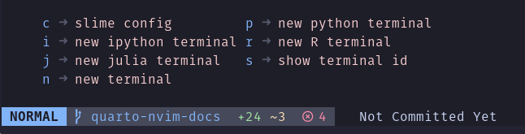
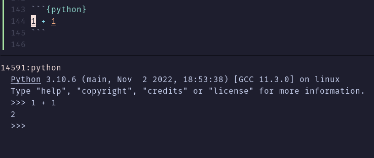
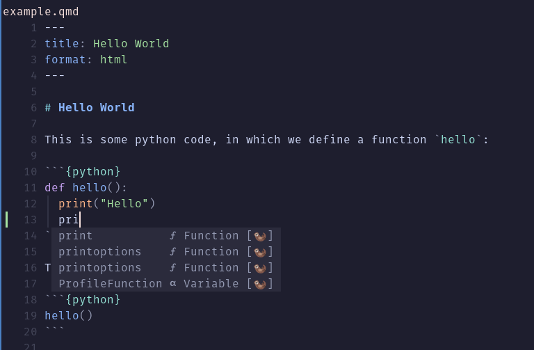

Neovim
Overview
The Quarto Neovim plugin aims to not reinvent the wheel. Existing plugins in the Neovim ecosystem are leveraged to provide the full experience. Some of the features provided by quarto-nvim and enhanced by plugins found in the kickstarter configuration are:
- Preview for Quarto documents.
- Syntax highlighting for markdown and embedded languages
- Completion for embedded languages (e.g. Python, R, Julia, etc.)
- Commands and key-bindings for running cells and selected lines.
- Completion for bibliography references, file paths, LaTeX math symbols, emoji.
- Optional spellchecking and completion.
- Code snippets.
- Export of code chunks into standalone scripts.

More screenshots
Installation
Installation instructions for the quarto plugin and the kickstarter configuration can be found in the respective readme files of the repository:
Render and Preview
To render and preview, execute the QuartoPreview command by pressing : to enter command mode and typing the command (there is autocompletion if you press the tab key). In the kickstarter configuration, there are more shortcuts starting with space q (spacebar followed by q, in normal mode).
After running the QuartoPreview command in Neovim, the preview will automatically update each time the buffer is saved.
Running Code Cells
You don’t need to fully render documents in order to iterate on code cells. With the provided configuration we can open a terminal of our choosing using the leader key (<space>) followed byc (for code) and then p (for python) or i (for ipython).
If you wait a little in between the key presses a small window pops up at the bottom of your screen to tell you about existing keybindings:

We can navigate between the code and the terminal using ctrl plus vim direction keys and enter commands into the python REPL by going into insert mode in this terminal buffer.
To send code to the python REPL from quarto we navigate to one of our code blocks and press <space><cr> (space bar followed by Enter). The plugin responsible for sending code to various places, vim-slime will prompt us with the question which terminal to send the code to, pre filled with the latest terminal we created.

If you want to use ctrl+Enter to send code just like in RStudio, you are going to have to tell your terminal emulator to send the correct key codes. For example, in the kitty terminal the configuration looks as follows:
map ctrl+shift+enter no_op
map shift+enter send_text all \x1b[13;2u
map ctrl+enter send_text all \x1b[13;5uThis is what the kickstarter configuration has been tested with.
Here are all of the commands and keyboard shortcuts available for executing cells:
| Quarto Command | Keyboard Shortcut |
|---|---|
| Create new terminal | space c x where x is the starting letter of python, r, ipython, julia or bash |
| Choose terminal | space c c |
| Show terminal id | space c s |
| Run Current Cell | space Enter |
| Run Current Cell | ctrl Enter (insert or normal mode)1 |
| Run Selected Line(s) | Enter (visual mode) |
Note that you can quickly insert a new code cell using the Alt+I and Alt+Shift+I keyboard shortcuts, the first being an R and the second being a python code chunk. Feel free to change this from the kickstarter configuration depending on your most-used language.
Contextual Assistance
In a code chunk you get autocompletion for the respective language. Use Tab and Shift+Tab to iterate through the suggestions2.

The otter in the completion list means that the completion plugin cmp got it’s completion suggestions from the otter.nvim plugin, which keeps track of the code in your Quarto document behind the scenes by writing only the code parts to another (an otter) document.
Code Snippets
Code snippets are templates that make it easier to enter repeating code patterns (e.g. code blocks, callouts, divs, etc.). You will find them in the autocompletion list and can trigger them with enter. Sometimes they contain multiple places within the snippet where the cursor can jump to. Use ctrl+n to jump to the next site.
For example, we might want to create a two column layout, so we type col2 and accept the suggestion with Enter to get
::: {layout-ncol=2}
:::If you find other helpful snippets, feel free to add a pull request to extend the ones included in the kickstarter configuration snippet list.
Extending Quarto: Lua Development in Neovim
Since Lua is already the language used to configure Neovim and the kickstarter configuration installs the Lua Language Server, code completion and diagnostics will be enabled for Quarto extension development.
Footnotes
if your terminal emulator supports this, see Running Cells↩︎